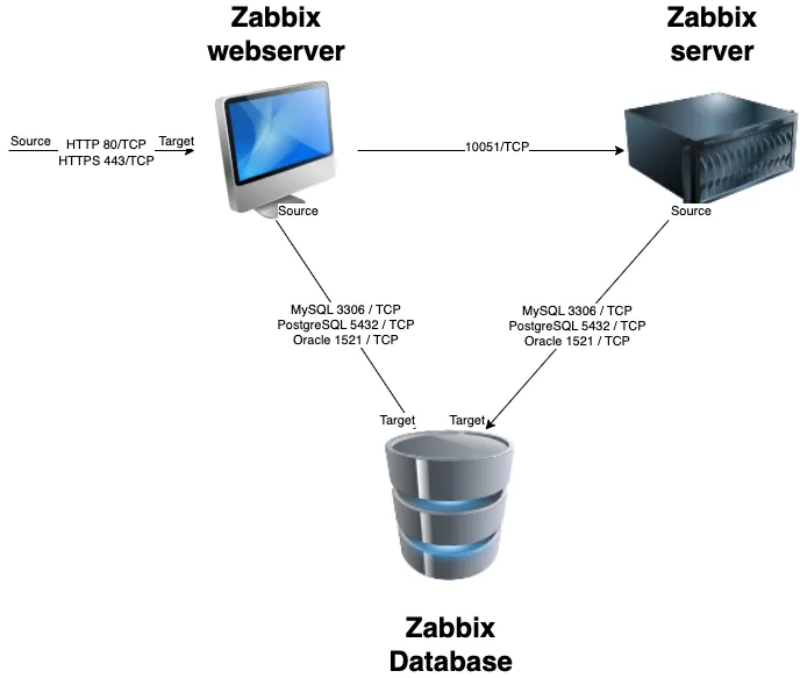
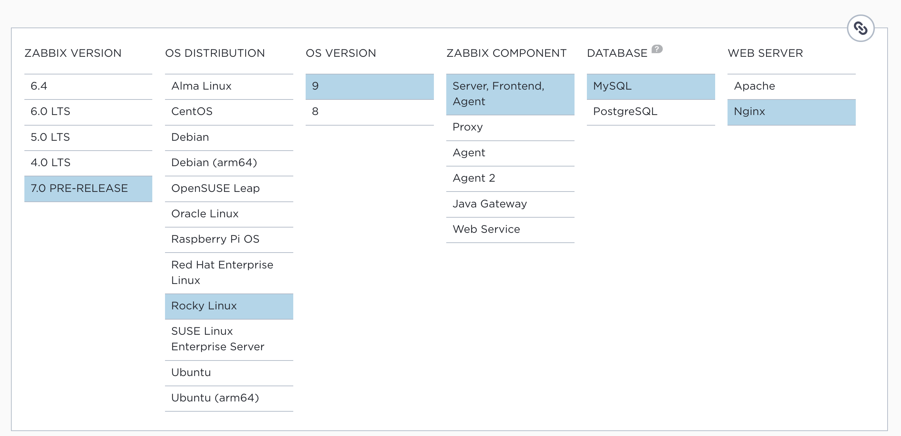
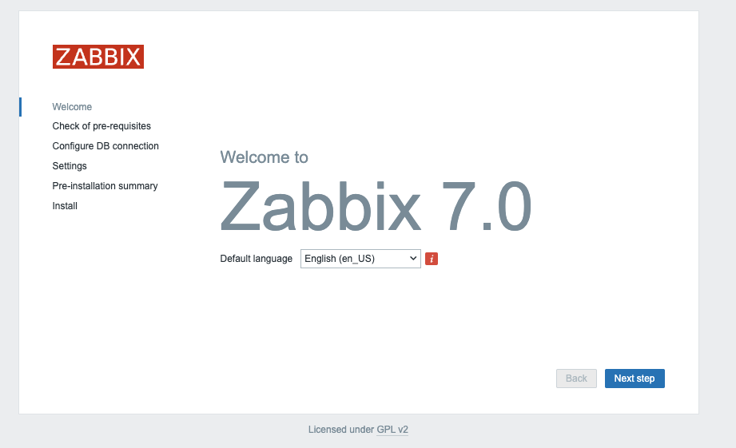
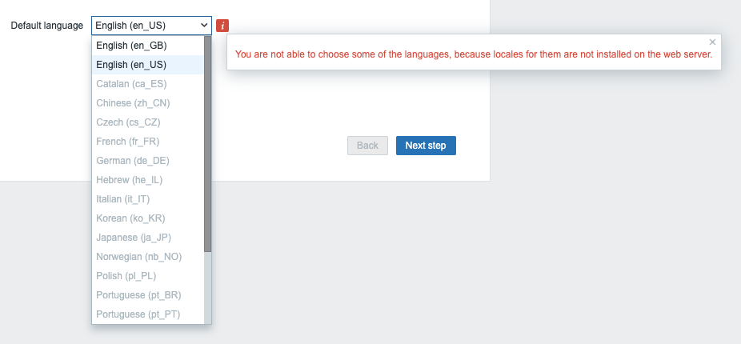
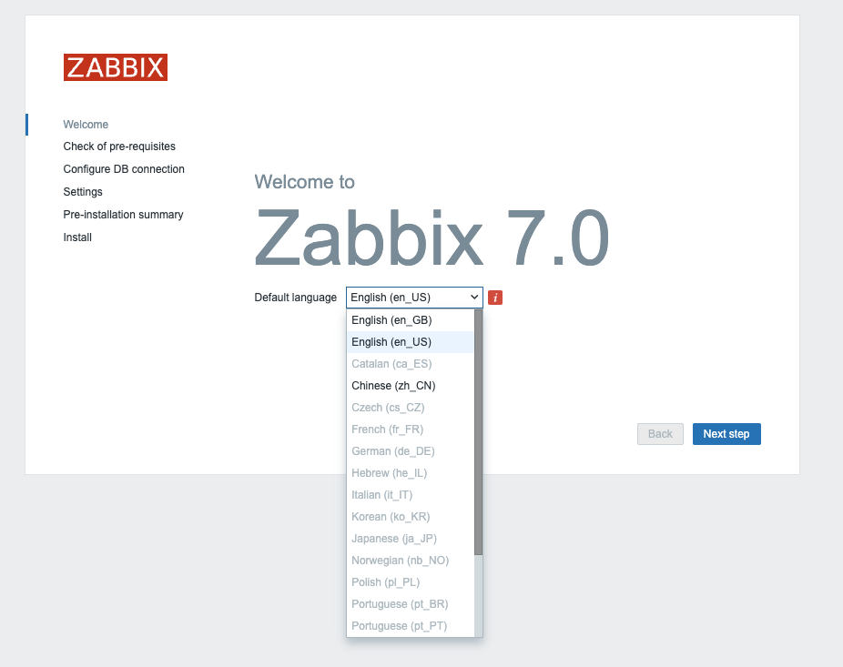
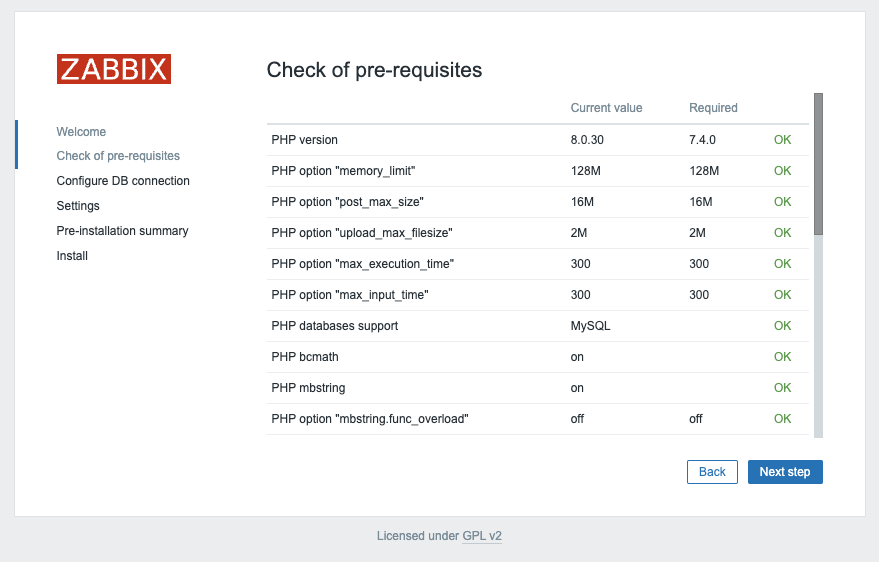
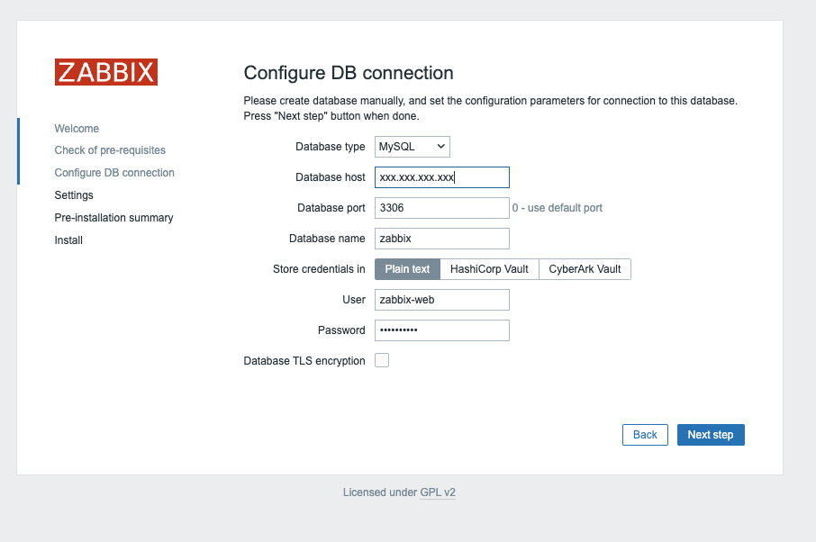
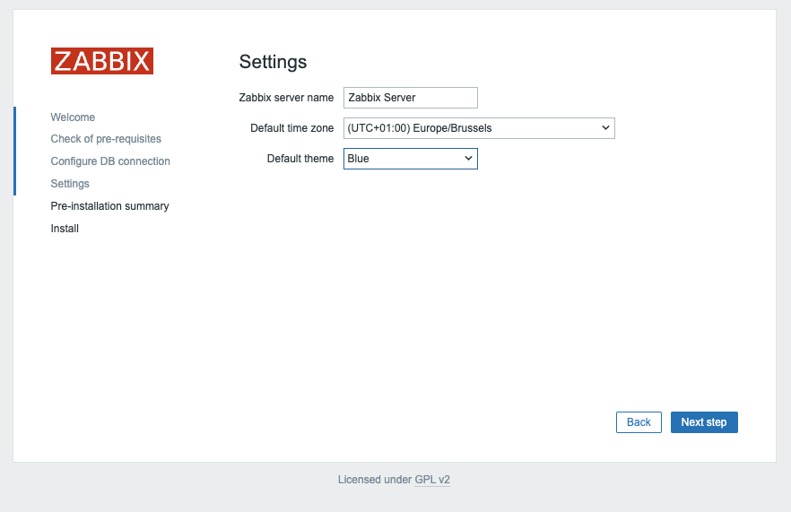
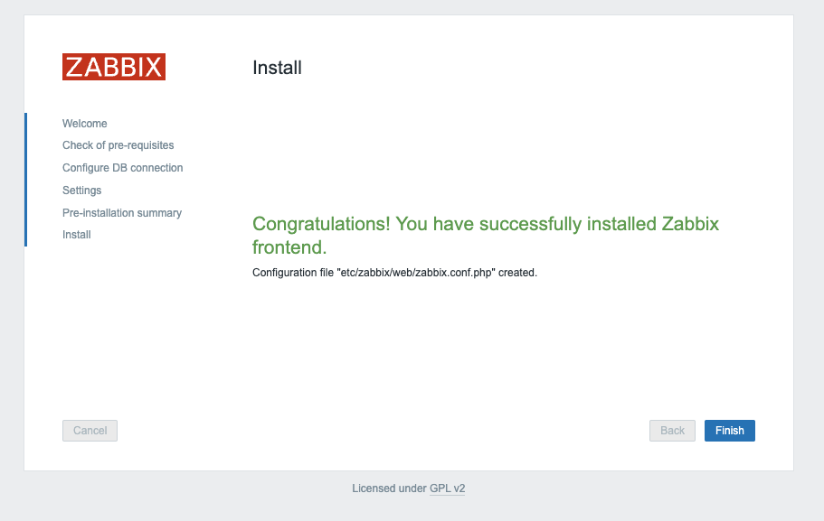

Installing Zabbix¶
In this chapter, we will walk through the process of installing the Zabbix server. In the previous section, we covered the installation of the database. Now, we will proceed with installing the Zabbix server and connecting it to the previously set up database. Additionally, we will explore various design options, as Zabbix supports a modular installation approach.
Before beginning the installation, it is important to understand the architecture of Zabbix. The Zabbix server is structured in a modular fashion, composed of three main components, which we will discuss in detail.
- The Zabbix server
- The Zabbix web server
- The Zabbix database

All of these components can either be installed on a single server or distributed across three separate servers. The core of the system is the Zabbix server, often referred to as the "brain." This component is responsible for processing trigger calculations and sending alerts. The database serves as the storage for the Zabbix server’s configuration and all the data it collects. The web server provides the user interface (front-end) for interacting with the system. It is important to note that the Zabbix API is part of the front-end component, not the Zabbix server itself.
These components must function together seamlessly, as illustrated in the diagram above. The Zabbix server must read configurations and store monitoring data in the database, while the front-end needs access to read and write configuration data. Furthermore, the front-end must be able to check the status of the Zabbix server and retrieve additional necessary information to ensure smooth operation.
For our setup, we will be using two virtual machines (VMs): one VM will host both the Zabbix server and the Zabbix web front-end, while the second VM will host the Zabbix database.
In this chapter, we will cover the following topics:
- Installing the Zabbix server for MySQL/MariaDB
- Installing the Zabbix server for PostgreSQL
- Installing the Zabbix front-end with NginX
- Installing the Zabbix front-end with Apache
Each section will guide you through the steps for setting up these components in a way that aligns with your specific configuration.
Installing the Zabbix Server¶
Before proceeding with the installation of your Zabbix server, ensure that the server is properly configured, as outlined in the previous section, Basic OS configuration.
Another critical step at this stage is disabling SELinux, which can interfere with the installation and operation of Zabbix. We will revisit SELinux in the chapter Securing Zabbix with SELinux to learn how to configure it securely.
To check the current status of SELinux, you can use the following command: sestatus
# sestatus
SELinux status: enabled
SELinuxfs mount: /sys/fs/selinux
SELinux root directory: /etc/selinux
Loaded policy name: targeted
Current mode: enforcing
Mode from config file: enforcing
Policy MLS status: enabled
Policy deny_unknown status: allowed
Memory protection checking: actual (secure)
Max kernel policy version: 33
As shown, the system is currently in enforcing mode.
To temporarily disable SELinux, you can run the following command: setenforce 0
# setenforce 0
# sestatus
SELinux status: enabled
SELinuxfs mount: /sys/fs/selinux
SELinux root directory: /etc/selinux
Loaded policy name: targeted
Current mode: permissive
Mode from config file: enforcing
Policy MLS status: enabled
Policy deny_unknown status: allowed
Memory protection checking: actual (secure)
Max kernel policy version: 33
Now, as you can see, the mode is switched to permissive.
However, this change is not persistent across reboots.
To make it permanent, you need to modify the SELinux configuration file located
at /etc/selinux/config. Open the file and replace enforcing with permissive.
Alternatively, you can achieve the same result more easily by running the following command:
sed -i 's/SELINUX=enforcing/SELINUX=permissive/g' /etc/selinux/config
This line will alter the config file for you.
So when we run sestatus again we will see that we are in permissive mode and
that our config file is also in permissive mode.
We can verify this with our cat commando.
# cat /etc/selinux/config
# This file controls the state of SELinux on the system.
# SELINUX= can take one of these three values:
# enforcing - SELinux security policy is enforced.
# permissive - SELinux prints warnings instead of enforcing.
# disabled - No SELinux policy is loaded.
# See also:
# https://docs.fedoraproject.org/en-US/quick-docs/getting-started-with-selinux/#getting-started-with-selinux-selinux-states-and-modes
#
# NOTE: In earlier Fedora kernel builds, SELINUX=disabled would also
# fully disable SELinux during boot. If you need a system with SELinux
# fully disabled instead of SELinux running with no policy loaded, you
# need to pass selinux=0 to the kernel command line. You can use grubby
# to persistently set the bootloader to boot with selinux=0:
#
# grubby --update-kernel ALL --args selinux=0
#
# To revert back to SELinux enabled:
#
# grubby --update-kernel ALL --remove-args selinux
#
SELINUX=permissive
# SELINUXTYPE= can take one of these three values:
# targeted - Targeted processes are protected,
# minimum - Modification of targeted policy. Only selected processes are protected.
# mls - Multi Level Security protection.
SELINUXTYPE=targeted
And we can also verify it with our commando setstatus
# sestatus
SELinux status: enabled
SELinuxfs mount: /sys/fs/selinux
SELinux root directory: /etc/selinux
Loaded policy name: targeted
Current mode: permissive
Mode from config file: permissive
Policy MLS status: enabled
Policy deny_unknown status: allowed
Memory protection checking: actual (secure)
Max kernel policy version: 33
Adding the Zabbix repository¶
From the Zabbix Download page, select the
appropriate Zabbix version you wish to install.
In this case, we will be using Zabbix 7.0 LTS. Additionally, ensure you choose
the correct OS distribution for your environment, which will be Rocky Linux 9
in our case for this setup but RHEL 9 or AlmaLinux 9 are fine too.
We will be installing the Zabbix Server along with NGINX as the web server for the front-end. Make sure to download the relevant packages for your chosen configuration.

Our first step is to disable the Zabbix packages provided by the EPEL repository,
if it's installed on your system.
To do this, edit the /etc/yum.repos.d/epel.repo file and add the following
statement to disable the EPEL repository by default:
[epel]
...
excludepkgs=zabbix*
Tip
It's considered bad practice to keep the EPEL repository enabled all the time,
as it may cause conflicts by unintentionally overwriting or installing
unwanted packages. Instead, it's safer to enable the repository only when needed,
by using the following command during installations: dnf install --enablerepo=epel <package-name>
This ensures that EPEL is only enabled when explicitly required.
Next, we will install the Zabbix repository on our operating system. After adding the Zabbix repository, it is recommended to perform a repository cleanup to remove old cache files and ensure the repository metadata is up to date. You can do this by running:
> rpm -Uvh https://repo.zabbix.com/zabbix/7.0/rhel/9/x86_64/zabbix-release-6.5-2.el9.noarch.rpm
> dnf clean all
This will refresh the repository metadata and prepare the system for Zabbix installation.
Note
A repository in Linux is a configuration that allows you to access and install software packages. You can think of it like an "app store" where you find and download software from a trusted source, in this case, the Zabbix repository. Many repositories are available, but it's important to only add those you trust. The safest practice is to stick to the repositories provided by your operating system and only add additional ones when you're sure they are both trusted and necessary.
For our installation, the Zabbix repository is provided by the vendor itself,
making it a trusted source. Another popular and safe repository for
RedHat-based systems is EPEL (Extra Packages for Enterprise Linux), which is
commonly used in enterprise environments.
However, always exercise caution when adding new repositories to ensure
system security and stability.
Installing the Zabbix server for MySQL/MariaDB¶
Now that we’ve added the Zabbix repository with the necessary software, we are ready to install both the Zabbix server and the web server. Keep in mind that the web server doesn’t need to be installed on the same machine as the Zabbix server; they can be hosted on separate systems if desired.
To install the Zabbix server and the web server components for MySQL/MariaDB, run the following command:
dnf install zabbix-server-mysql zabbix-web-mysql
After successfully installing the Zabbix server and frontend packages, we need
to configure the Zabbix server to connect to the database.
This requires modifying the Zabbix server configuration file.
Open the /etc/zabbix/zabbix_server.conf file and update the following lines
to match your database configuration:
DBHost=<database-host>
DBName=<database-name>
DBUser=<database-user>
DBPassword=<database-password>
Replace <database-host>, <database-name>, <database-user>,
and <database-password> with the appropriate values for your setup.
This ensures that the Zabbix server can communicate with your database.
Ensure that there is no # (comment symbol) in front of the configuration parameters, as Zabbix will treat lines beginning with # as comments, ignoring them during execution. Additionally, double-check for duplicate configuration lines; if there are multiple lines with the same parameter, Zabbix will use the value from the last occurrence.
For our setup, the configuration will look like this:
# vi /etc/zabbix/zabbix_server.conf
DBHost=<ip or dns of your MariaDB server>
DBName=zabbix
DBUser=zabbix-srv
DBPassword=<your super secret password>
DBPort=3306
In this example:
- DBHost refers to the host where your database is running (use localhost if it's on the same machine).
- DBName is the name of the Zabbix database.
- DBUser is the database user.
- DBPassword is the password for the database user.
Make sure the settings reflect your environment's database configuration.
Note
The Zabbix server configuration file offers an option to include additional configuration files for custom parameters. For a production environment, it's often best to avoid altering the original configuration file directly. Instead, you can create and include a separate configuration file for any additional or modified parameters. This approach ensures that your original configuration file remains untouched, which is particularly useful when performing upgrades or managing configurations with tools like Ansible, Puppet, or SaltStack.
To enable this feature, remove the # from the line:
# Include=/usr/local/etc/zabbix_server.conf.d/*.conf
Then, ensure the path `/usr/local/etc/zabbix_server.conf.d/` exists and
create a custom configuration file in this directory.
This file should be readable by the `zabbix` user. By doing so, you can add
or modify parameters without modifying the default configuration file,
making system management and upgrades smoother.
With the Zabbix server configuration updated to connect to your database, you can now start and enable the Zabbix server service. Run the following command to enable the Zabbix server and ensure it starts automatically on boot:
systemctl enable zabbix-server --now`
This command will start the Zabbix server service immediately and configure it to launch on system startup.
To verify that the Zabbix server is running correctly, check the log file for any messages. You can view the latest entries in the Zabbix server log file using:
tail /var/log/zabbix/zabbix_server.log
Look for messages indicating that the server has started successfully. If there are any issues, the log file will provide details to help with troubleshooting.
1123:20231120:110604.440 Starting Zabbix Server. Zabbix 7.0.0alpha7 (revision 60de6a81aca).
1123:20231120:110604.440 ****** Enabled features ******
1123:20231120:110604.440 SNMP monitoring: YES
1123:20231120:110604.440 IPMI monitoring: YES
1123:20231120:110604.440 Web monitoring: YES
1123:20231120:110604.440 VMware monitoring: YES
1123:20231120:110604.440 SMTP authentication: YES
1123:20231120:110604.440 ODBC: YES
1123:20231120:110604.440 SSH support: YES
1123:20231120:110604.440 IPv6 support: YES
1123:20231120:110604.440 TLS support: YES
1123:20231120:110604.440 ******************************
1123:20231120:110604.440 using configuration file: /etc/zabbix/zabbix_server.conf
1123:20231120:110604.470 current database version (mandatory/optional): 06050143/06050143
1123:20231120:110604.470 required mandatory version: 06050143
1124:20231120:110604.490 starting HA manager
1124:20231120:110604.507 HA manager started in active mode
1123:20231120:110604.508 server #0 started [main process]
1126:20231120:110604.509 server #2 started [configuration syncer #1]
1125:20231120:110604.510 server #1 started [service manager #1]
1133:20231120:110604.841 server #9 started [lld worker #1]
1132:20231120:110604.841 server #8 started [lld manager #1]
1134:20231120:110604.841 server #10 started [lld worker #2]
If there was an error and the server was not able to connect to the database you would see something like this in the server log file :
10773:20231118:213248.570 Starting Zabbix Server. Zabbix 7.0.0alpha7 (revision 60de6a81aca).
10773:20231118:213248.570 ****** Enabled features ******
10773:20231118:213248.570 SNMP monitoring: YES
10773:20231118:213248.570 IPMI monitoring: YES
10773:20231118:213248.570 Web monitoring: YES
10773:20231118:213248.570 VMware monitoring: YES
10773:20231118:213248.570 SMTP authentication: YES
10773:20231118:213248.570 ODBC: YES
10773:20231118:213248.570 SSH support: YES
10773:20231118:213248.570 IPv6 support: YES
10773:20231118:213248.570 TLS support: YES
10773:20231118:213248.570 ******************************
10773:20231118:213248.570 using configuration file: /etc/zabbix/zabbix_server.conf
10773:20231118:213248.574 [Z3001] connection to database 'zabbix' failed: [2002] Can't connect to server on 'xxx.xxx.xxx.xxx' (115)
10773:20231118:213248.574 database is down: reconnecting in 10 seconds
10773:20231118:213258.579 [Z3001] connection to database 'zabbix' failed: [2002] Can't connect to server on 'xxx.xxx.xxx.xxx' (115)
10773:20231118:213258.579 database is down: reconnecting in 10 seconds
Let's check the Zabbix server service to see if it's enabled so that it survives a reboot
# systemctl status zabbix-server
● zabbix-server.service - Zabbix Server
Loaded: loaded (/usr/lib/systemd/system/zabbix-server.service; enabled; preset: disabled)
Active: active (running) since Mon 2023-11-20 11:06:04 CET; 1h 2min ago
Main PID: 1123 (zabbix_server)
Tasks: 59 (limit: 12344)
Memory: 52.6M
CPU: 20.399s
CGroup: /system.slice/zabbix-server.service
├─1123 /usr/sbin/zabbix_server -c /etc/zabbix/zabbix_server.conf
├─1124 "/usr/sbin/zabbix_server: ha manager"
├─1125 "/usr/sbin/zabbix_server: service manager #1 [processed 0 events, updated 0 event tags, deleted 0 problems, synced 0 service updates, idle 5.008686 sec during 5.016382 sec]"
├─1126 "/usr/sbin/zabbix_server: configuration syncer [synced configuration in 0.092797 sec, idle 10 sec]"
├─1127 "/usr/sbin/zabbix_server: alert manager #1 [sent 0, failed 0 alerts, idle 5.027620 sec during 5.027828 sec]"
├─1128 "/usr/sbin/zabbix_server: alerter #1 started"
├─1129 "/usr/sbin/zabbix_server: alerter #2 started"
├─1130 "/usr/sbin/zabbix_server: alerter #3 started"
├─1131 "/usr/sbin/zabbix_server: preprocessing manager #1 [queued 1, processed 2 values, idle 5.490312 sec during 5.490555 sec]"
├─1132 "/usr/sbin/zabbix_server: lld manager #1 [processed 1 LLD rules, idle 5.028973sec during 5.029123 sec]"
├─1133 "/usr/sbin/zabbix_server: lld worker #1 [processed 1 LLD rules, idle 60.060180 sec during 60.085009 sec]"
├─1134 "/usr/sbin/zabbix_server: lld worker #2 [processed 1 LLD rules, idle 60.065526 sec during 60.095165 sec]"
├─1135 "/usr/sbin/zabbix_server: housekeeper [deleted 0 hist/trends, 0 items/triggers, 0 events, 0 sessions, 0 alarms, 0 audit items, 0 autoreg_host, 0 records in 0.019108 sec, idle for 1 hour(s)]"
├─1136 "/usr/sbin/zabbix_server: timer #1 [updated 0 hosts, suppressed 0 events in 0.002856 sec, idle 59 sec]"
├─1137 "/usr/sbin/zabbix_server: http poller #1 [got 0 values in 0.000059 sec, idle 5 sec]"
├─1138 "/usr/sbin/zabbix_server: discovery manager #1 [processing 0 rules, 0.000000% of queue used, 0 unsaved checks]"
├─1139 "/usr/sbin/zabbix_server: history syncer #1 [processed 0 values, 0 triggers in 0.000036 sec, idle 1 sec]"
├─1140 "/usr/sbin/zabbix_server: history syncer #2 [processed 1 values, 0 triggers in 0.005016 sec, idle 1 sec]"
├─1141 "/usr/sbin/zabbix_server: history syncer #3 [processed 0 values, 0 triggers in 0.000031 sec, idle 1 sec]"
├─1142 "/usr/sbin/zabbix_server: history syncer #4 [processed 0 values, 0 triggers in 0.000014 sec, idle 1 sec]"
├─1143 "/usr/sbin/zabbix_server: escalator #1 [processed 0 escalations in 0.005587 sec, idle 3 sec]"
├─1144 "/usr/sbin/zabbix_server: proxy poller #1 [exchanged data with 0 proxies in 0.000010 sec, idle 5 sec]"
├─1145 "/usr/sbin/zabbix_server: self-monitoring [processed data in 0.000016 sec, idle 1 sec]"
├─1146 "/usr/sbin/zabbix_server: task manager [processed 0 task(s) in 0.002511 sec, idle 5 sec]"
├─1147 "/usr/sbin/zabbix_server: poller #1 [got 0 values in 0.000009 sec, idle 1 sec]"
├─1148 "/usr/sbin/zabbix_server: poller #2 [got 1 values in 0.000232 sec, idle 1 sec]"
├─1149 "/usr/sbin/zabbix_server: poller #3 [got 0 values in 0.000015 sec, idle 1 sec]"
├─1150 "/usr/sbin/zabbix_server: poller #4 [got 0 values in 0.000010 sec, idle 1 sec]"
This concludes our chapter on installing and configuring the Zabbix server with MySQL. Next, we will proceed with configuring the front-end. You can choose to follow the instructions for either:
Each guide will walk you through setting up the web interface for Zabbix based on your preferred web server.
Installing the Zabbix server for PostgreSQL¶
Now that we’ve added the Zabbix repository with the necessary software, we are ready to install both the Zabbix server and the web server. Keep in mind that the web server doesn’t need to be installed on the same machine as the Zabbix server; they can be hosted on separate systems if desired.
To install the Zabbix server and the web server components for PostgreSQL, run the following command:
dnf install zabbix-server-pgsql zabbix-web-pgsql
After successfully installing the Zabbix server and frontend packages,
we need to configure the Zabbix server to connect to the database.
This requires modifying the Zabbix server configuration file.
Open the /etc/zabbix/zabbix_server.conf file and update the following lines
to match your database configuration:
DBHost=<ip or dns of your PostgreSQL server>
DBName=<the name of your database>
DBSchema=<our PostgreSQL schema name>
DBUser=<the user that will connect to the database>
DBPassword=<your super secret password>
Replace
Ensure that there is no # (comment symbol) in front of the configuration parameters, as Zabbix will treat lines beginning with # as comments, ignoring them during execution. Additionally, double-check for duplicate configuration lines; if there are multiple lines with the same parameter, Zabbix will use the value from the last occurrence.
For our setup, the configuration will look like this:
# vi /etc/zabbix/zabbix_server.conf
DBHost=<ip or dns of your MariaDB server>
DBName=zabbix
DBSchema=zabbix_server
DBUser=zabbix-srv
DBPassword=<your super secret password>
DBPort=5432
In this example:
- DBHost refers to the host where your database is running (use localhost if it's on the same machine).
- DBName is the name of the Zabbix database.
- DBUser is the database user.
- DBPassword is the password for the database user.
Make sure the settings reflect your environment's database configuration.
Note
The Zabbix server configuration file offers an option to include additional
configuration files for custom parameters. For a production environment,
it's often best to avoid altering the original configuration file directly.
Instead, you can create and include a separate configuration file for any
additional or modified parameters. This approach ensures that your original
configuration file remains untouched, which is particularly useful when performing
upgrades or managing configurations with tools like Ansible, Puppet, or SaltStack.
To enable this feature, remove the # from the line:
# Include=/usr/local/etc/zabbix_server.conf.d/*.conf
Then, ensure the path /usr/local/etc/zabbix_server.conf.d/ exists and
create a custom configuration file in this directory.
This file should be readable by the zabbix user. By doing so, you can add
or modify parameters without modifying the default configuration file,
making system management and upgrades smoother.
With the Zabbix server configuration updated to connect to your database, you can now start and enable the Zabbix server service. Run the following command to enable the Zabbix server and ensure it starts automatically on boot:
systemctl enable zabbix-server --now
This command will start the Zabbix server service immediately and configure it to launch on system startup. To verify that the Zabbix server is running correctly, check the log file for any messages. You can view the latest entries in the Zabbix server log file using:
tail /var/log/zabbix/zabbix_server.log
Look for messages indicating that the server has started successfully. If there are any issues, the log file will provide details to help with troubleshooting.
1123:20231120:110604.440 Starting Zabbix Server. Zabbix 7.0.0alpha7 (revision 60de6a81aca).
1123:20231120:110604.440 ****** Enabled features ******
1123:20231120:110604.440 SNMP monitoring: YES
1123:20231120:110604.440 IPMI monitoring: YES
1123:20231120:110604.440 Web monitoring: YES
1123:20231120:110604.440 VMware monitoring: YES
1123:20231120:110604.440 SMTP authentication: YES
1123:20231120:110604.440 ODBC: YES
1123:20231120:110604.440 SSH support: YES
1123:20231120:110604.440 IPv6 support: YES
1123:20231120:110604.440 TLS support: YES
1123:20231120:110604.440 ******************************
1123:20231120:110604.440 using configuration file: /etc/zabbix/zabbix_server.conf
1123:20231120:110604.470 current database version (mandatory/optional): 06050143/06050143
1123:20231120:110604.470 required mandatory version: 06050143
1124:20231120:110604.490 starting HA manager
1124:20231120:110604.507 HA manager started in active mode
1123:20231120:110604.508 server #0 started [main process]
1126:20231120:110604.509 server #2 started [configuration syncer #1]
1125:20231120:110604.510 server #1 started [service manager #1]
1133:20231120:110604.841 server #9 started [lld worker #1]
1132:20231120:110604.841 server #8 started [lld manager #1]
1134:20231120:110604.841 server #10 started [lld worker #2]
If there was an error and the server was not able to connect to the database you would see something like this in the server log file :
10773:20231118:213248.570 Starting Zabbix Server. Zabbix 7.0.0alpha7 (revision 60de6a81aca).
10773:20231118:213248.570 ****** Enabled features ******
10773:20231118:213248.570 SNMP monitoring: YES
10773:20231118:213248.570 IPMI monitoring: YES
10773:20231118:213248.570 Web monitoring: YES
10773:20231118:213248.570 VMware monitoring: YES
10773:20231118:213248.570 SMTP authentication: YES
10773:20231118:213248.570 ODBC: YES
10773:20231118:213248.570 SSH support: YES
10773:20231118:213248.570 IPv6 support: YES
10773:20231118:213248.570 TLS support: YES
10773:20231118:213248.570 ******************************
10773:20231118:213248.570 using configuration file: /etc/zabbix/zabbix_server.conf
10773:20231118:213248.574 [Z3001] connection to database 'zabbix' failed: [2002] Can't connect to server on 'xxx.xxx.xxx.xxx' (115)
10773:20231118:213248.574 database is down: reconnecting in 10 seconds
10773:20231118:213258.579 [Z3001] connection to database 'zabbix' failed: [2002] Can't connect to server on 'xxx.xxx.xxx.xxx' (115)
10773:20231118:213258.579 database is down: reconnecting in 10 seconds
Let's check the Zabbix server service to see if it's enabled so that it survives a reboot
# systemctl status zabbix-server
● zabbix-server.service - Zabbix Server
Loaded: loaded (/usr/lib/systemd/system/zabbix-server.service; enabled; preset: disabled)
Active: active (running) since Mon 2023-11-20 11:06:04 CET; 1h 2min ago
Main PID: 1123 (zabbix_server)
Tasks: 59 (limit: 12344)
Memory: 52.6M
CPU: 20.399s
CGroup: /system.slice/zabbix-server.service
├─1123 /usr/sbin/zabbix_server -c /etc/zabbix/zabbix_server.conf
├─1124 "/usr/sbin/zabbix_server: ha manager"
├─1125 "/usr/sbin/zabbix_server: service manager #1 [processed 0 events, updated 0 event tags, deleted 0 problems, synced 0 service updates, idle 5.008686 sec during 5.016382 sec]"
├─1126 "/usr/sbin/zabbix_server: configuration syncer [synced configuration in 0.092797 sec, idle 10 sec]"
├─1127 "/usr/sbin/zabbix_server: alert manager #1 [sent 0, failed 0 alerts, idle 5.027620 sec during 5.027828 sec]"
├─1128 "/usr/sbin/zabbix_server: alerter #1 started"
├─1129 "/usr/sbin/zabbix_server: alerter #2 started"
├─1130 "/usr/sbin/zabbix_server: alerter #3 started"
├─1131 "/usr/sbin/zabbix_server: preprocessing manager #1 [queued 1, processed 2 values, idle 5.490312 sec during 5.490555 sec]"
├─1132 "/usr/sbin/zabbix_server: lld manager #1 [processed 1 LLD rules, idle 5.028973sec during 5.029123 sec]"
├─1133 "/usr/sbin/zabbix_server: lld worker #1 [processed 1 LLD rules, idle 60.060180 sec during 60.085009 sec]"
├─1134 "/usr/sbin/zabbix_server: lld worker #2 [processed 1 LLD rules, idle 60.065526 sec during 60.095165 sec]"
├─1135 "/usr/sbin/zabbix_server: housekeeper [deleted 0 hist/trends, 0 items/triggers, 0 events, 0 sessions, 0 alarms, 0 audit items, 0 autoreg_host, 0 records in 0.019108 sec, idle for 1 hour(s)]"
├─1136 "/usr/sbin/zabbix_server: timer #1 [updated 0 hosts, suppressed 0 events in 0.002856 sec, idle 59 sec]"
├─1137 "/usr/sbin/zabbix_server: http poller #1 [got 0 values in 0.000059 sec, idle 5 sec]"
├─1138 "/usr/sbin/zabbix_server: discovery manager #1 [processing 0 rules, 0.000000% of queue used, 0 unsaved checks]"
├─1139 "/usr/sbin/zabbix_server: history syncer #1 [processed 0 values, 0 triggers in 0.000036 sec, idle 1 sec]"
├─1140 "/usr/sbin/zabbix_server: history syncer #2 [processed 1 values, 0 triggers in 0.005016 sec, idle 1 sec]"
├─1141 "/usr/sbin/zabbix_server: history syncer #3 [processed 0 values, 0 triggers in 0.000031 sec, idle 1 sec]"
├─1142 "/usr/sbin/zabbix_server: history syncer #4 [processed 0 values, 0 triggers in 0.000014 sec, idle 1 sec]"
├─1143 "/usr/sbin/zabbix_server: escalator #1 [processed 0 escalations in 0.005587 sec, idle 3 sec]"
├─1144 "/usr/sbin/zabbix_server: proxy poller #1 [exchanged data with 0 proxies in 0.000010 sec, idle 5 sec]"
├─1145 "/usr/sbin/zabbix_server: self-monitoring [processed data in 0.000016 sec, idle 1 sec]"
├─1146 "/usr/sbin/zabbix_server: task manager [processed 0 task(s) in 0.002511 sec, idle 5 sec]"
├─1147 "/usr/sbin/zabbix_server: poller #1 [got 0 values in 0.000009 sec, idle 1 sec]"
├─1148 "/usr/sbin/zabbix_server: poller #2 [got 1 values in 0.000232 sec, idle 1 sec]"
├─1149 "/usr/sbin/zabbix_server: poller #3 [got 0 values in 0.000015 sec, idle 1 sec]"
├─1150 "/usr/sbin/zabbix_server: poller #4 [got 0 values in 0.000010 sec, idle 1 sec]"
This concludes our chapter on installing and configuring the Zabbix server with PostgreSQL. Next, we will proceed with configuring the front-end. You can choose to follow the instructions for either:
Each guide will walk you through setting up the web interface for Zabbix based on your preferred web server.
Installing Zabbix frontend with Nginx¶
Before configuring the front-end, you need to install the necessary packages. If the Zabbix front-end is hosted on the same server as the Zabbix server, you can install the required packages with the following command:
# dnf install zabbix-nginx-conf and zabbix-web-mysql
or if you used PostgreSQL
# dnf install zabbix-web-pgsql
This command will install the front-end packages along with the required dependencies for Nginx or Apache, depending on your web server choice. If you are installing the front-end on a different server, make sure to execute this command on that specific machine.
If you don't remember how to add the repository, have a look at Adding the Zabbix repository
First thing we have to do is alter the Nginx configuration file so that we don't use the standard config.
vi /etc/nginx/nginx.conf
In this config look for the followin block that starts with :
server {
listen 80;
listen [::]:80;
server_name _;
root /usr/share/nginx/html;
# Load configuration files for the default server block.
include /etc/nginx/default.d/*.conf;
And place the following lines in comment:
server {
# listen 80;
# listen [::]:80;
# server_name _;
# root /usr/share/nginx/html;
We now have to alter the Zabbix configuration file so that it matches our setup. Edit the following file:
vi /etc/nginx/conf.d/zabbix.conf
server {
listen 8080;
server_name example.com;
root /usr/share/zabbix;
index index.php;
Replace the first 2 lines with the correct port and domain for your frontend in case you don't have a domain you can replace servername with; like in the exaple below:
server {
# listen 8080;
# server_name example.com;
listen 80;
server_name _;
root /usr/share/zabbix;
index index.php;
We are now ready to start our websever and enable it so that it comes online after a reboot.
systemctl enable php-fpm --now
systemctl enable nginx --now
Let's verify if the service is properly started and enabled so that it survives our reboot next time.
# systemctl status nginx
● nginx.service - The nginx HTTP and reverse proxy server
Loaded: loaded (/usr/lib/systemd/system/nginx.service; enabled; preset: disabled)
Drop-In: /usr/lib/systemd/system/nginx.service.d
└─php-fpm.conf
Active: active (running) since Mon 2023-11-20 11:42:18 CET; 30min ago
Main PID: 1206 (nginx)
Tasks: 2 (limit: 12344)
Memory: 4.8M
CPU: 38ms
CGroup: /system.slice/nginx.service
├─1206 "nginx: master process /usr/sbin/nginx"
└─1207 "nginx: worker process"
Nov 20 11:42:18 zabbix-srv systemd[1]: Starting The nginx HTTP and reverse proxy server...
Nov 20 11:42:18 zabbix-srv nginx[1204]: nginx: the configuration file /etc/nginx/nginx.conf syntax is ok
Nov 20 11:42:18 zabbix-srv nginx[1204]: nginx: configuration file /etc/nginx/nginx.conf test is successful
Nov 20 11:42:18 zabbix-srv systemd[1]: Started The nginx HTTP and reverse proxy server.
The service is running and enabled so there is only 1 thing left to do before we can start the configuration in the GUI and that is to configure our firewall to allow incoming communication to the webserver.
firewall-cmd --add-service=http --permanent
firewall-cmd --reload
Open your browser and go to the url or ip of your frontend :
http://<ip or dns of the zabbix frontend server>/
If all goes well you should be greeted with a Zabbix welcome page. In case you have an error check the configuration again or have a look at the nginx log file :
/var/log/nginx/error.log
or run
journalctl -xe
This should help you in locating the errors you made.
When you point your browser to the correct URL you should be greeted with a page like here :

As you see there is only a limited list of local translations available on our Zabbix frontend to choose from

What if we want to install Chinese as language or another language from the list ? Run the next command to get a list of all locales available for your OS.
dnf list glibc-langpack-*
This will give you a list like
Installed Packages
glibc-langpack-en.x86_64
Available Packages
glibc-langpack-aa.x86_64
...
glibc-langpack-zu.x86_64
Let's search for our Chinese locale to see if it is available. As you can see the code starts with zh
# dnf list glibc-langpack-* | grep zh
glibc-langpack-zh.x86_64
glibc-langpack-lzh.x86_64
The command returns us 2 lines but as we have seen that the code was zh_CN we only have to install the first package.
# dnf install glibc-langpack-zh.x86_64 -y
When we return now to our frontend we are able to select the Chinese language.

Note
If your preferred language is not available in the Zabbix front-end, don't worry—it simply means that the translation is either incomplete or not yet available. Zabbix is an open-source project that relies on community contributions for translations, so you can help improve it by contributing your own translations.
Visit the translation page at [https://translate.zabbix.com/](https://translate.zabbix.com/)
to assist with the translation efforts. Once your translation is complete and reviewed,
it will be included in the next minor patch version of Zabbix.
Your contributions help make Zabbix more accessible and improve the overall
user experience for everyone.
When you're satisfied with the available translations, click Next. You will then be taken to a screen to verify that all prerequisites are met. If any prerequisites are not fulfilled, address those issues first. However, if everything is in order, you should be able to proceed by clicking Next.

On the next page, you'll configure the database connection parameters:
- Select the Database Type: Choose either
MySQLorPostgreSQLdepending on your setup. - Enter the Database Host: Provide the IP address or DNS name of your
database server. Use port
3306for MariaDB/MySQL or5432for PostgreSQL. - Enter the Database Name: Specify the name of your database. In our case,
it is
zabbix. If you are using PostgreSQL, you will also need to provide the schema name, which iszabbix_serverin our case. - Enter the Database User: Input the database user created for the web front-end,
such as
zabbix-web. Enter the corresponding password for this user.
Ensure that the Database TLS encryption option is not selected, and then click Next step to proceed.

You're almost finished with the setup! The final steps involve:
- Assigning an Instance Name: Choose a descriptive name for your Zabbix instance.
- Selecting the Timezone: Choose the timezone that matches your location or your preferred time zone for the Zabbix interface.
- Setting the Default Time Format: Select the default time format you prefer to use.
Once these settings are configured, you can complete the setup and proceed with any final configuration steps as needed.
Note
It’s a good practice to set your Zabbix server to the UTC timezone, especially when managing systems across multiple timezones. Using UTC helps ensure consistency in time-sensitive actions and events, as the server’s timezone is often used for calculating and displaying time-related information.

After clicking Next step again, you'll be taken to a page confirming that the configuration was successful. Click Finish to complete the setup process.

We are now ready to login :

Login : Admin Password : zabbix
This concludes our topic on setting up the Zabbix server. If you're interested in securing your front-end, I recommend checking out the topic Securing Zabbix for additional guidance and best practices.
Installing Zabbix frontend with Apache¶
Before we can configure our frontend we need to install our package first. If you run the frontend on the same server as the Zabbix server then there is nothing else you have to do you can just run the following command on your server to install the packages needed for our frontend to install:
# dnf install zabbix-apache-conf zabbix-web-mysql
or if you used PostgreSQL
# dnf install zabbix-apache-conf zabbix-web-pgsql
This command will install the front-end packages along with the required dependencies for Nginx or Apache, depending on your web server choice. If you are installing the front-end on a different server, make sure to execute this command on that specific machine.
If you don't remember how to add the repository, have a look at Adding the Zabbix repository
We are now ready to start our websever and enable it so that it comes online after a reboot.
systemctl enable php-fpm --now
systemctl enable httpd --now
Let's verify if the service is properly started and enabled so that it survives our reboot next time.
# systemctl status httpd
● httpd.service - The Apache HTTP Server
Loaded: loaded (/usr/lib/systemd/system/httpd.service; enabled; preset: disabled)
Drop-In: /usr/lib/systemd/system/httpd.service.d
└─php-fpm.conf
Active: active (running) since Mon 2024-03-04 08:50:17 CET; 7min ago
Docs: man:httpd.service(8)
Main PID: 690 (httpd)
Status: "Total requests: 96; Idle/Busy workers 100/0;Requests/sec: 0.213; Bytes served/sec: 560 B/sec"
Tasks: 278 (limit: 22719)
Memory: 39.6M
CPU: 1.132s
CGroup: /system.slice/httpd.service
├─ 690 /usr/sbin/httpd -DFOREGROUND
├─ 736 /usr/sbin/httpd -DFOREGROUND
├─ 737 /usr/sbin/httpd -DFOREGROUND
├─ 738 /usr/sbin/httpd -DFOREGROUND
├─ 739 /usr/sbin/httpd -DFOREGROUND
└─4534 /usr/sbin/httpd -DFOREGROUND
Mar 04 08:50:17 localhost.localdomain systemd[1]: Starting The Apache HTTP Server...
Mar 04 08:50:17 localhost.localdomain httpd[690]: AH00558: httpd: Could not reliably determine the server's fully qualified domain name, using localhost.localdomain. Set th>
Mar 04 08:50:17 localhost.localdomain httpd[690]: Server configured, listening on: port 80
Mar 04 08:50:17 localhost.localdomain systemd[1]: Started The Apache HTTP Server.x
The service is running and enabled so there is only 1 thing left to do before we can start the configuration in the GUI and that is to configure our firewall to allow incoming communication to the webserver.
# firewall-cmd --add-service=http --permanent
# firewall-cmd --reload
Open your browser and go to the url or ip of your frontend :
http://<ip or dns of the zabbix frontend server>/zabbix/
If all goes well you should be greeted with a Zabbix welcome page. In case you have an error check the configuration again or have a look at the Apache log file :
/var/log/httpd/error_log
or run
journalctl -xe
This should help you in locating the errors you made.
As you see there is only a limited list of local translations available on our Zabbix frontend to choose from
What if we want to install Chinese as language or another language from the list ? Run the next command to get a list of all locales available for your OS.
dnf list glibc-langpack-*
This will give you a list like
Installed Packages
glibc-langpack-en.x86_64
Available Packages
glibc-langpack-aa.x86_64
...
glibc-langpack-zu.x86_64
Let's search for our Chinese locale to see if it is available. As you can see the code starts with zh
# dnf list glibc-langpack-* | grep zh
glibc-langpack-zh.x86_64
glibc-langpack-lzh.x86_64
The command returns us 2 lines but as we have seen that the code was zh_CN we only have to install the first package.
# dnf install glibc-langpack-zh.x86_64 -y
When we return now to our frontend we are able to select the Chinese language.
Note
If your preferred language is not available in the Zabbix front-end, don't worry—it simply means that the translation is either incomplete or not yet available. Zabbix is an open-source project that relies on community contributions for translations, so you can help improve it by contributing your own translations.
Visit the translation page at `https://translate.zabbix.com/` to assist with
the translation efforts. Once your translation is complete and reviewed,
it will be included in the next minor patch version of Zabbix.
Your contributions help make Zabbix more accessible and improve the overall
user experience for everyone.
When you're satisfied with the available translations, click Next. You will then be taken to a screen to verify that all prerequisites are met. If any prerequisites are not fulfilled, address those issues first. However, if everything is in order, you should be able to proceed by clicking Next.
On the next page, you'll configure the database connection parameters:
- Select the Database Type: Choose either MySQL or PostgreSQL depending on your setup.
- Enter the Database Host: Provide the IP address or DNS name of your database server. Use port 3306 for MariaDB/MySQL or 5432 for PostgreSQL.
- Enter the Database Name: Specify the name of your database. In our case, it is zabbix. If you are using PostgreSQL, you will also need to provide the schema name, which is zabbix_server in our case.
- Enter the Database User: Input the database user created for the web front-end, such as zabbix-web. Enter the corresponding password for this user.
Ensure that the Database TLS encryption option is not selected, and then click Next step to proceed.
You're almost finished with the setup! The final steps involve:
- Assigning an Instance Name: Choose a descriptive name for your Zabbix instance.
- Selecting the Timezone: Choose the timezone that matches your location or your preferred time zone for the Zabbix interface.
- Setting the Default Time Format: Select the default time format you prefer to use.
Once these settings are configured, you can complete the setup and proceed with any final configuration steps as needed.
Note
It’s a good practice to set your Zabbix server to the UTC timezone, especially when managing systems across multiple timezones. Using UTC helps ensure consistency in time-sensitive actions and events, as the server’s timezone is often used for calculating and displaying time-related information.
After clicking Next step again, you'll be taken to a page confirming that the configuration was successful. Click Finish to complete the setup process.
We are now ready to login :
Login : Admin Password : zabbix
In case you are like me and don't like the /zabbix path at the end of you url then
there is an easy way to remove this.
Edit you httpd config file and add the lines below and replace it with
your own domain:
# vi /etc/httpd/conf/httpd.conf
NameVirtualHost 172.1.11.21:80
<VirtualHost "your ip or dns":80>
ServerName zabbixserver.mydomain.org
ServerAlias zabbixserver
DocumentRoot /usr/share/zabbix
</VirtualHost>
Don't forget to restart the httpd service
# systemctl restart httpd
This concludes our topic on setting up the Zabbix server. If you're interested in securing your front-end, I recommend checking out the topic Securing Zabbix for additional guidance and best practices.